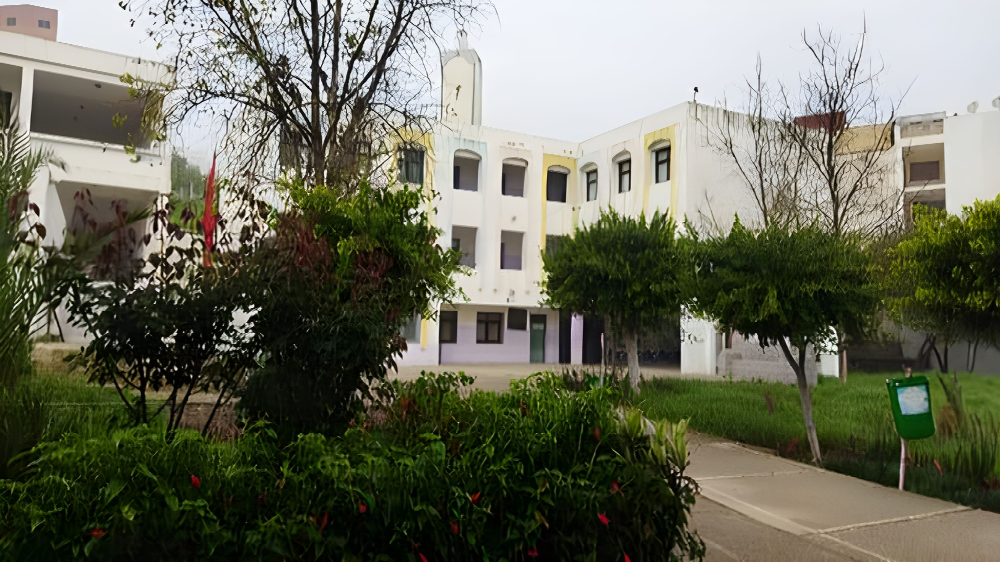
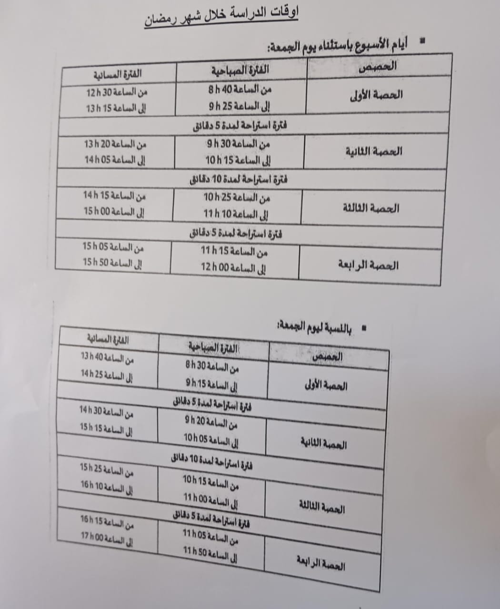
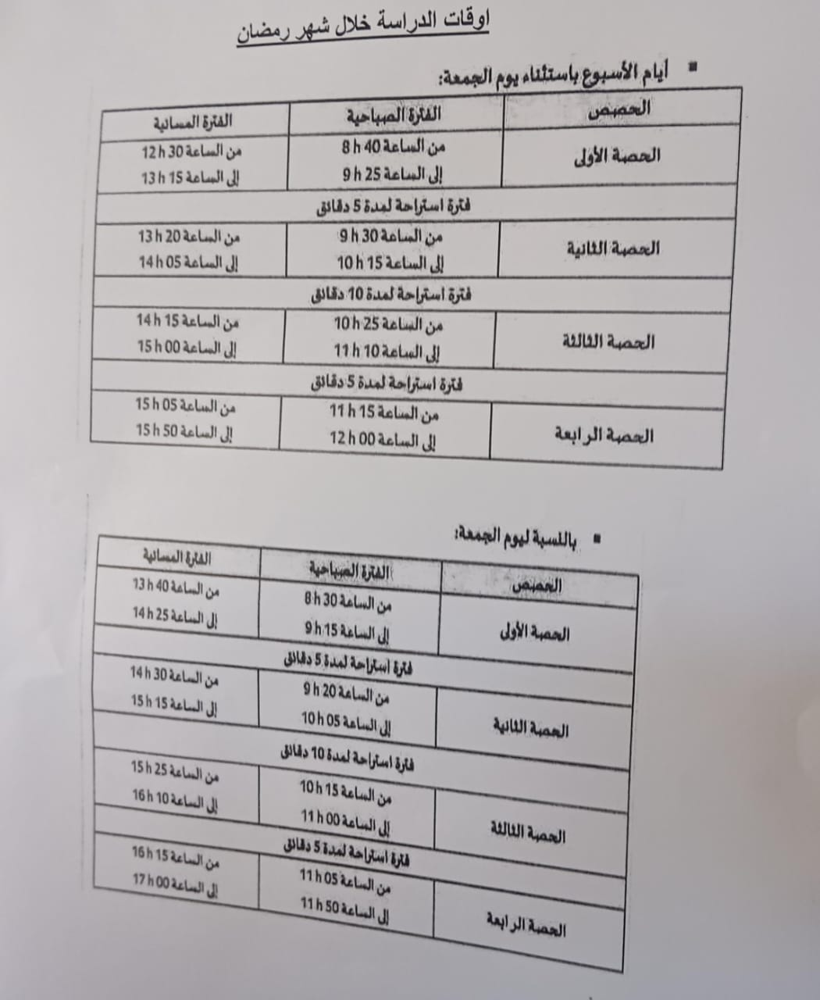

Al Farabi
L'école Al-Farabi est une école préparatoire
gouvernementale gérée par l'État.

Quest-ce que lécole Al-Farabi ?
Al-Farabi est l'une des écoles publiques les plus importantes situées dans la ville de Tanger, au Royaume du Maroc. Cet établissement d'enseignement se distingue par sa situation géographique particulière dans le quartier d'Al-Jarari, qui est l'un des quartiers animés et connus de la ville. L'école secondaire et l'école préparatoire Al-Farabi font partie des écoles qui ont acquis une grande renommée dans les cercles éducatifs. En raison des services éducatifs et éducatifs complets qu'elle offre aux habitants du quartier et des zones voisines.
Horaires des cours du Ramadan le vendredi
 

Contact US